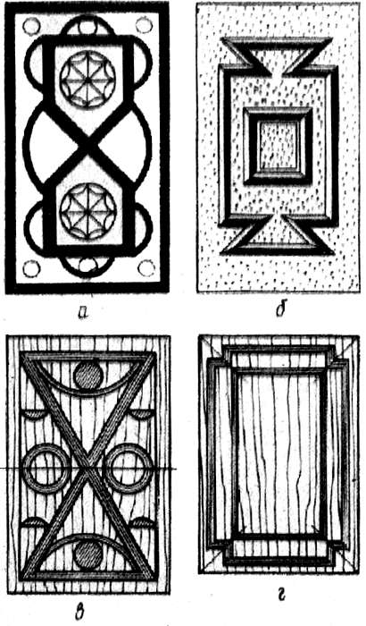
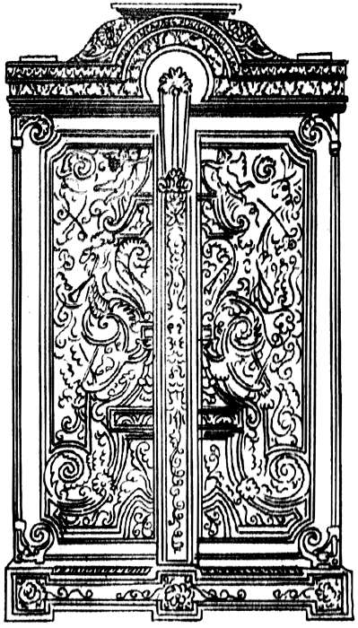
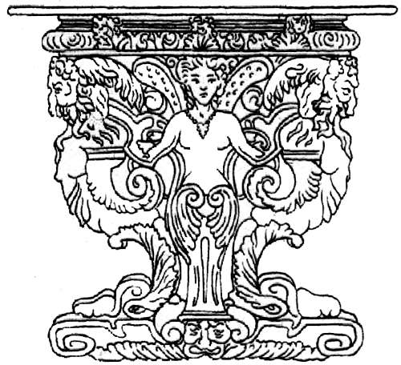

Орнамент как украшение мебели.

Есть несколько способов украшения мебели орнаментом: орнамент на древесине можно вырезать, выжечь, сделать в виде вставок или накладок из другого материала. Орнамент на изделиях из дерева может покрывать не только плоскость досок, но и круглые детали – столбы и выгнутые спинки, ножки стульев и кресел. Для украшения предметов мебели могут быть применены все приемы получения орнаментальной выразительности – живописные, графические, архитектурные и скульптурные.
Мебель называют архитектурой малых форм. Поэтому, несмотря на все разнообразие приемов построения орнамента, тектоническая основа его для мебели обязательна. Более широкие декоративные возможности дерева по сравнению с камнем или кирпичом всегда находили свое отражение в пышности и затейливости орнаментальных украшений на мебели.
Специфика мебельного столярного орнамента состоит в следующем. Украшение, выполненное виде орнамента, не должно противоречить структуре изделия. Например, если врезанная орнаментальная вставка ослабляет деталь, работающую под нагрузкой (царга, стойка), применение ее не целесообразно. В такой ситуации нужно накладное украшение, выступающее за поверхность основной детали.
Способ нанесения орнамента на несущие конструктивные элементы должен быть таким, чтобы мысленное удаление украшения не делало конструктивную часть слишком тонкой и непрочной. Выбор орнаментального приема зависит от материала, структуры и поверхности изделия, на которую накладывается орнамент. Неоправданным будет использование одинаковых орнаментальных вставок в технике маркетри на вставной тонкой филенке двери и на массивной угловой стойке шкафа. На массиве должна быть использована иная техника орнаментировки – врезка, инкрустация либо накладка.
Орнамент должен соответствовать положению деталей изделия в пространстве. Например, верхний карниз шкафа должен иметь более развитый орнамент, нежели цокольный брус. Композицию орнаментов, характерных для вышивок или графических заставок книжного типа, в мебели использовать нельзя.
Размещенный на ограниченных со всех сторон деталях орнамент должен подчиняться форме детали, вписываться в нее, а не противоречить ей. Так, неоправданным будет использование треугольной орнаментальной вставки в квадратной филенке двери. Во всех случаях главным является предмет, орнамент не должен «выпирать» и тем самым разрушать цельность впечатления.
Такие понятия как «живописное» и «графическое» применительно к орнаменту в мебели условны, так как в отделке лицевых поверхностей не применяют ни кистей с красками, ни разрисовки пером и тушью. Под словом «живописное» следует понимать использование цвета дерева и фактуры поверхностного покрытия предмета. Однако можно так подобрать листы шпона или кусочки инкрустаций, что система образующихся пятен станет именно живописной.
Графический прием мебельной орнаментики построен на использовании полосовых орнаментальных украшений, построенных на врезках узких линеек цветного дерева, образующих четкий орнаментальный рисунок в технике маркетри (на рис. позиции а, в), либо узких линейных теней от разного рода раскладок (позиции б, г), отступов и выступов поверхности предмета.

Рис. 26. Графическая мебельная орнаментика: а, в – на основе маркетри; б – на основе раскладных профильных реек; г – на основе накладных плоских реек
Наиболее дорогой и выразительный орнамент в мебели резной. Он требует применения массива, при глубокой резьбе значительно повышается ценность работы и самого предмета. Накладные орнаментальные украшения чаще всего металлические (из бронзы), тонированного под дерево гипса, полистирола.
Изготовление накладной деревянной резьбы более сложно, чем в массиве, из-за хрупкости детали. С другой стороны, накладная деревянная резьба не свидетельствует о добротности основания и делает предмет менее ценным, чем углубленная, при том же характере формы.
Украшения в виде орнамента в мебели выполняются из конструкционного в своей основе материала, т. е. из того же дерева, что и сам предмет. Поэтому закономерно развитие орнамента из подчиненного элемента мебельной композиции от небольшого украшения до самодовлеющей формы, за которой общая структура мебельного предмета как бы отходит на второй план. Это особенно характерно для предметов художественной мебели и имеет массу подтверждений в натуре. Например, мебель представленная на рисунке ниже, представляет собой изделие, сплошь покрытые врезной металлической инкрустацией, оплетающей сделанную из ценного дерева поверхность предмета как бы металлическим кружевом, представляющим самостоятельный художественный интерес. Резьба может стать настолько выразительной, что резное украшение становится главным композиционным ядром, перед которым отступают на задний план и структура и даже предназначение вещи.

Рис. 27. Образец мебели, насыщенной сложным орнаментом
Возможности орнамента в мебели очень широкие. Использование орнаментальных украшений в высококачественной мебели тем более обоснованно, чем менее ценен материал, из которого сделан предмет, чем менее интересна и декоративна текстура поверхности предмета. Построение предмета мебели из материала, ценность и добротность которого не вызывают сомнений, требует, наоборот, тактичного, усиливающего впечатление этой добротности орнаментального украшения. Например, мебель русского классицизма, облицованная шпоном из красного дерева косого распила, получившего название «пламя». Даже большие плоскости, покрытые таким шпоном, вызывают интерес, не становятся монотонными и занимают центральное место в композиции. Сдержанная орнаментальная порезка краевых по отношению к этой плоскости деталей, сделанная в глубь обрамляющего массива, только подчеркивает добротность примененного материала и работы. Мебель так называемого эклектического стиля, в которой без особого смысла и меры соединены художественные линии форм и орнаменты разных эпох, несмотря на качественный материал, производит впечатление негармоничной, перегруженной и в целом безвкусной.
Несмотря на то, что слишком развитая орнаментальная деталь в мебели и может иметь центральное композиционное значение и как бы представлять зрителю себя самое, все же она не может быть зрительно отделена от предмета.

Рис. 28. Резная консольная ножка стола
В рельефной резьбе из-за ее глубины, а также при переходе от декоративной тематики к сюжетной или декоративно-сюжетной выразительность орнаментального резного украшения может стать настолько сильной, что такое отделение станет возможным. Резная консольная ножка стола на рисунке – пример того, как композиция предмета мебели разрушилась, мебель превратилась в скульптуру.